Manual operacional profissional do Albergue
Guia visual para operar o plantão, registrar estadias, controlar presença, acompanhar qualidade de dados e gerar evidências institucionais com segurança.
Use por fluxo, não por curiosidade
- Fluxo do plantão
- Login e perfil ativo
- Painel de controle
- Casas, camas e lista
- Buscar pessoas e novo cadastro
- Perfil, ocorrências e histórico
- Presença e censo
- Relatórios, LGPD e exportações
- Qualidade de dados
- Impacto social
- Conferência de RMA
- Checklist e responsabilidades
O plantão deve seguir uma sequência simples
O sistema é mais forte quando a equipe registra a realidade na ordem correta: ocupação, cadastro, estadia, presença, qualidade e evidência.
- Entrar com o perfil correto do Albergue.
- Abrir o painel e conferir ocupação, vagas livres, saídas previstas e pendências.
- Buscar a pessoa antes de cadastrar.
- Registrar entrada somente com cama real disponível.
- Registrar ocorrências relevantes no perfil da pessoa.
- Conferir presença por quarto e encerrar triagem apenas após revisão.
- Abrir qualidade de dados antes de exportar relatórios.
- Usar relatórios, impacto social e RMA para fechamento e decisão.
Login define o que cada pessoa pode enxergar
O menu muda conforme o perfil. Antes de concluir que uma tela “sumiu”, confira a conta ativa e o papel institucional.
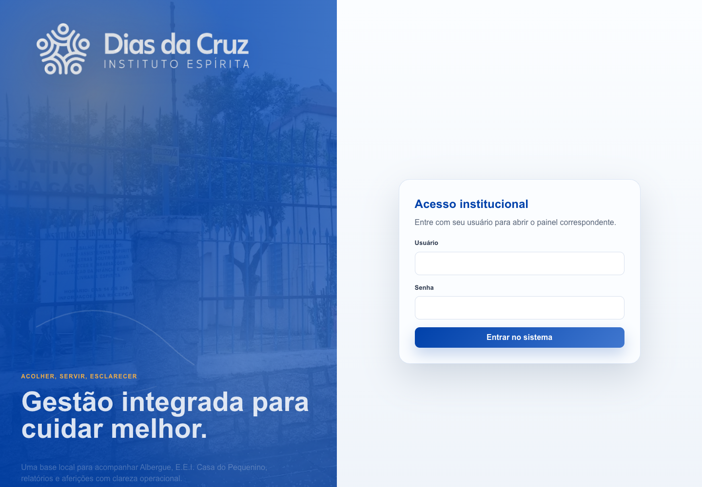
1 2 3Identifica o perfil institucional que será carregado.
Garante acesso individual. Senha temporária deve ser trocada.
A tela reforça que o sistema integra Albergue, E.E.I., lojas e gestão.
Após login, a pessoa deve cair na área compatível com seu perfil.
O painel mostra a verdade inicial do plantão
Antes de qualquer entrada ou saída, a equipe deve ler ocupação por casa, total de vagas, histórico e pendências de presença.
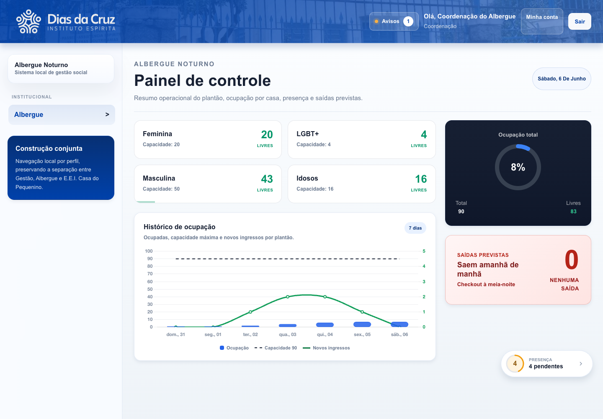
1 2 3 4Clicar em uma casa abre camas ocupadas e livres.
Resume uso da capacidade instalada no plantão.
Mostra ocupação recente, capacidade e novos ingressos.
Atalho operacional para presença ainda não conferida.
- Abra o painel no início do plantão.
- Confira se há vaga livre na casa correta.
- Abra a casa antes de registrar uma nova estadia.
- Verifique pendências antes do fechamento.
Casa e cama são o núcleo da ocupação real
A estadia só é válida se corresponder a uma cama concreta. O modal permite controlar permanência, troca e saída.
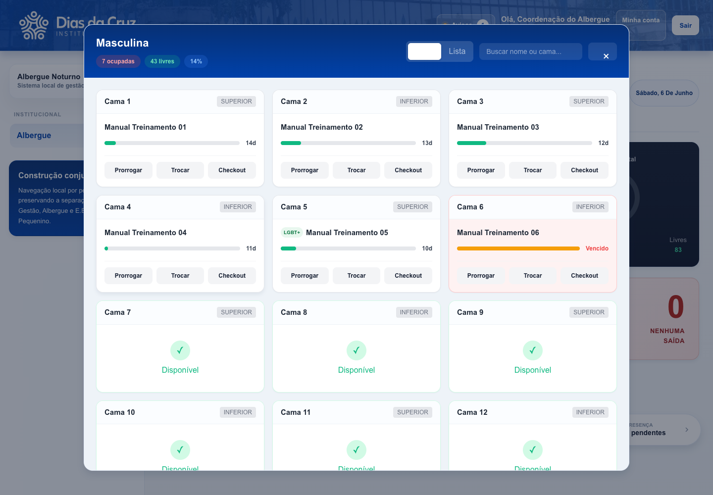
1 2 3 4Mostra ocupadas, livres e percentual da casa selecionada.
Exibe pessoa, prazo restante e ações da estadia.
Sinaliza necessidade de decisão: prorrogar, trocar ou sair.
Prorrogar, trocar cama ou fazer checkout alteram ocupação e histórico.
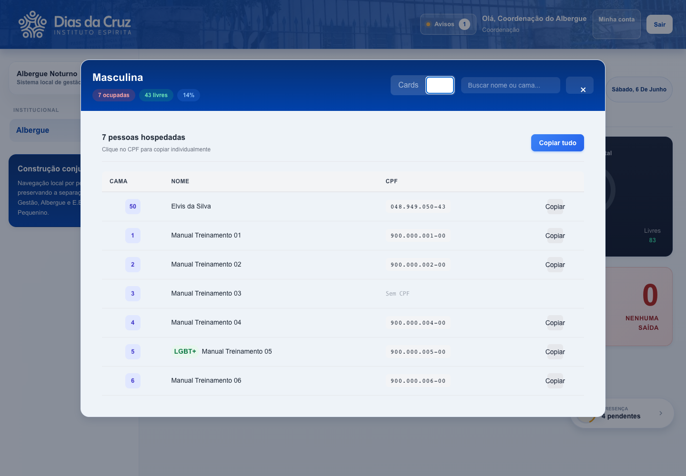
1 2 3Confere rapidamente quem está na casa.
Apoia conferência interna sem digitação manual.
Pode ser copiado quando houver finalidade administrativa.
Evite colar dados pessoais em canais sem controle.
Buscar antes de cadastrar evita duplicidade
A busca mostra status da pessoa e oferece as ações corretas: abrir perfil, iniciar entrada ou registrar saída.
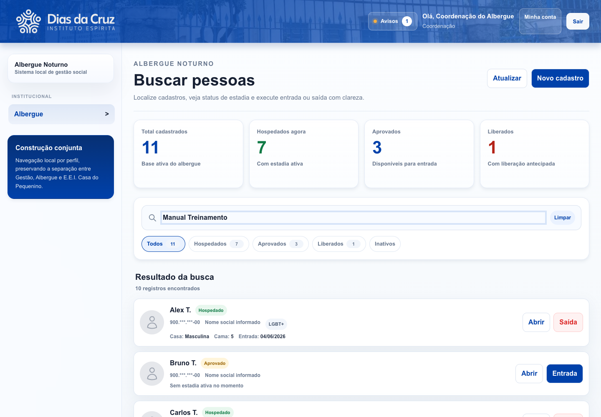
1 2 3 4Use apenas depois de buscar e confirmar que a pessoa não existe.
Aceita nome, nome social, CPF ou NIS.
Organizam hospedados, aprovados, liberados e inativos.
`Abrir`, `Entrada` e `Saída` aparecem conforme a situação.
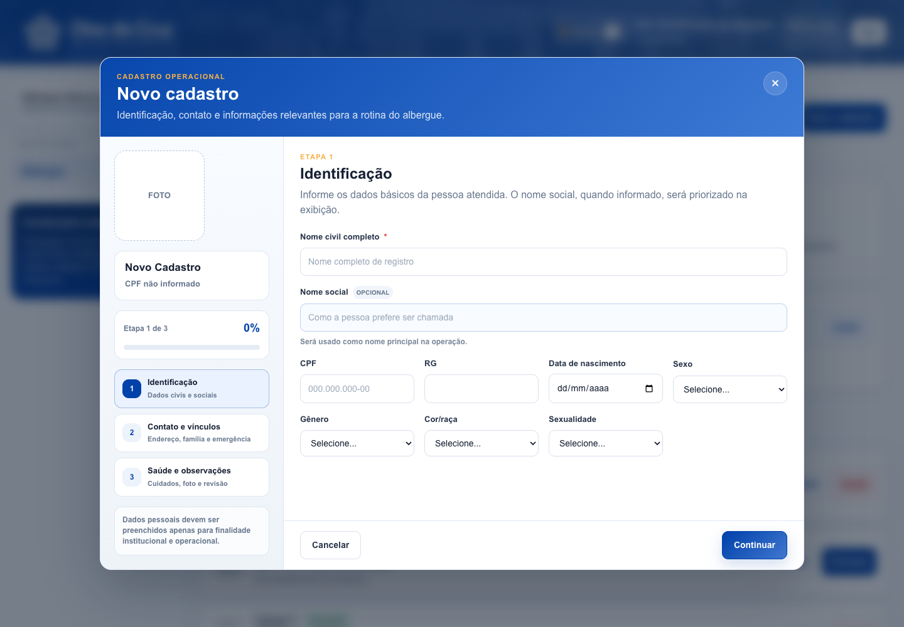
1 2 3 4Nome, nome social, documento e dados de nascimento.
Endereço, telefone e referência familiar quando houver.
Saúde, alergias, medicações e observações relevantes.
Finaliza o cadastro e torna o registro pesquisável.
O perfil é a memória institucional do atendimento
O perfil reúne identidade, estadia atual, histórico, ocorrências e pendências. É a tela que deve orientar decisões sensíveis.
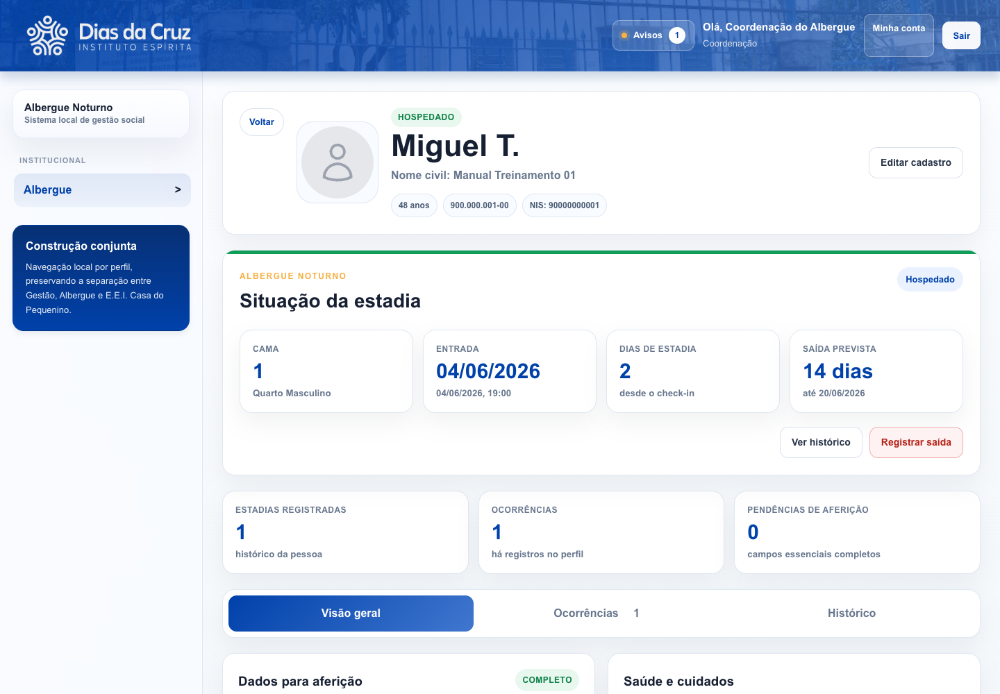
1 2 3 4Nome, documentos e dados básicos da pessoa.
Cama, entrada, dias de estadia e saída prevista.
Encerra estadia e libera a cama.
Atualiza dados quando houver informação confiável.
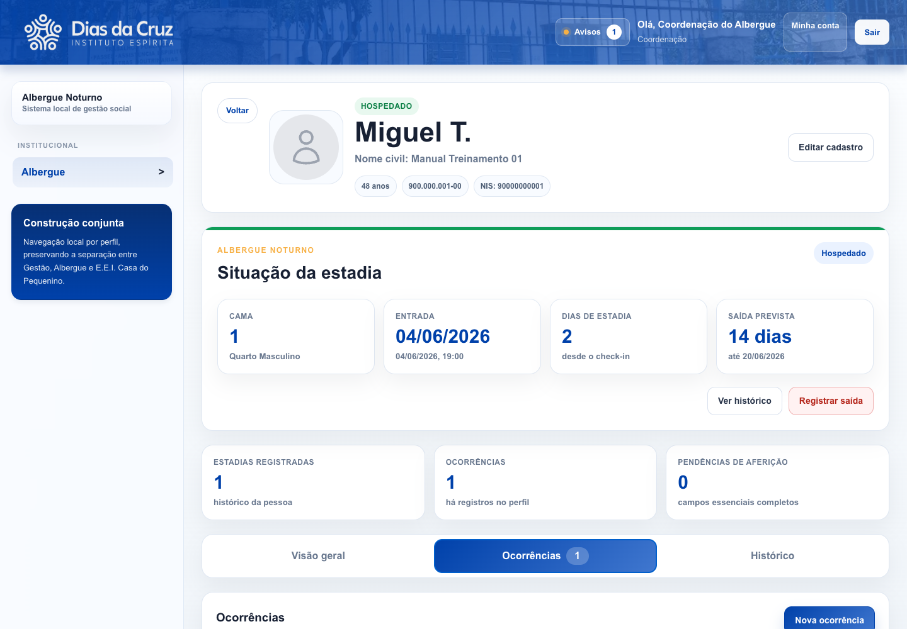
Como registrar uma ocorrência útil
- Registre fato, contexto e encaminhamento.
- Escolha tipo e severidade compatíveis.
- Evite opinião pessoal ou linguagem acusatória.
- Use o histórico antes de decidir prorrogação, saída ou bloqueio.
Presença e censo fecham a realidade do plantão
A presença transforma ocupação em confirmação do pernoite. Pendência precisa ser resolvida antes de encerrar triagem.
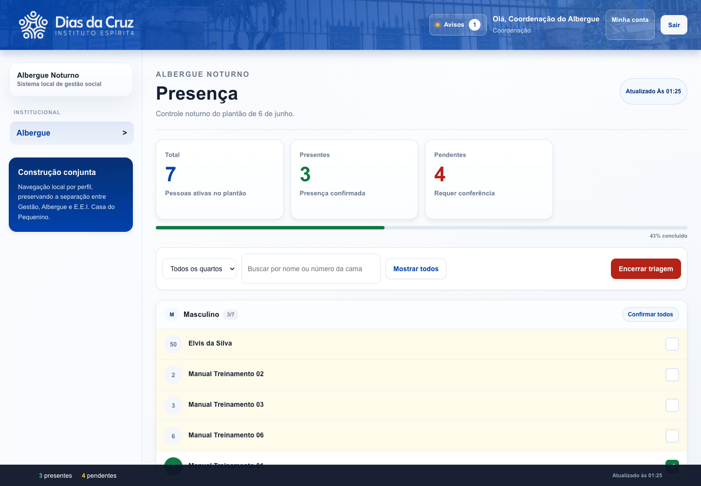
1 2 3 4Quantidade já confirmada no plantão.
Pessoas ativas sem presença marcada.
Permite revisar por quarto, nome ou cama.
Use somente depois da conferência.
Relatório bom começa com base limpa
Os relatórios tornam visíveis perfil, movimentação e recortes. Para apresentação, use LGPD e revise qualidade de dados antes.
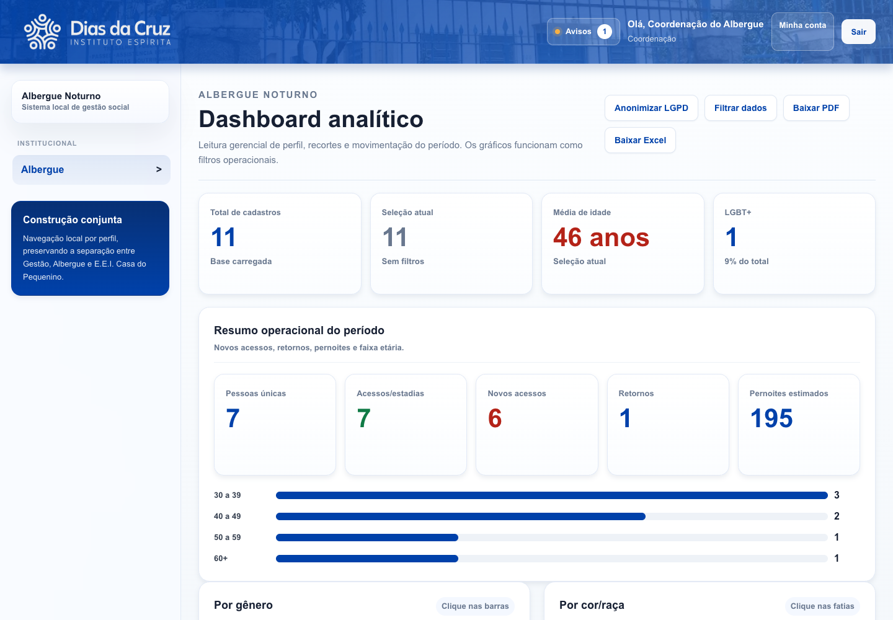
1 2 3 4Oculta dados sensíveis quando o relatório circular fora da operação.
Recorta período e características para responder uma pergunta específica.
PDF para leitura; Excel para análise e conferência.
Traduz registros em movimento, pernoites e faixa etária.
Qualidade de dados é a antessala da decisão
A tela mostra pendências que fragilizam relatórios, censo, RMA e leitura de gestão.
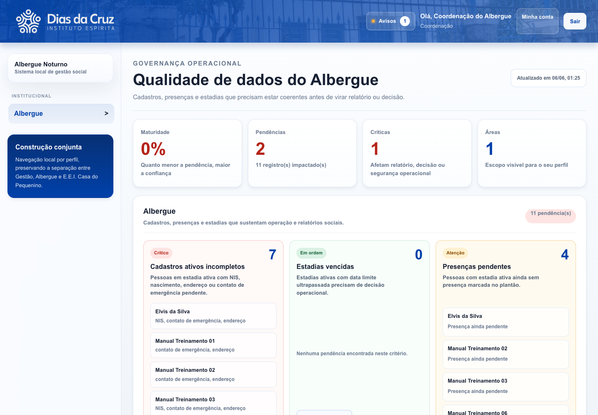
1 2 3 4Afetam identificação, relatório e continuidade do atendimento.
Devem ser resolvidas antes do fechamento.
Quando em ordem, indica que não há prazo ultrapassado.
Apontam exatamente onde corrigir.
Impacto social registra escuta anônima, não prontuário paralelo
O módulo apoia leitura qualitativa do serviço: proteção, descanso, orientação, próximos passos e demandas identificadas.
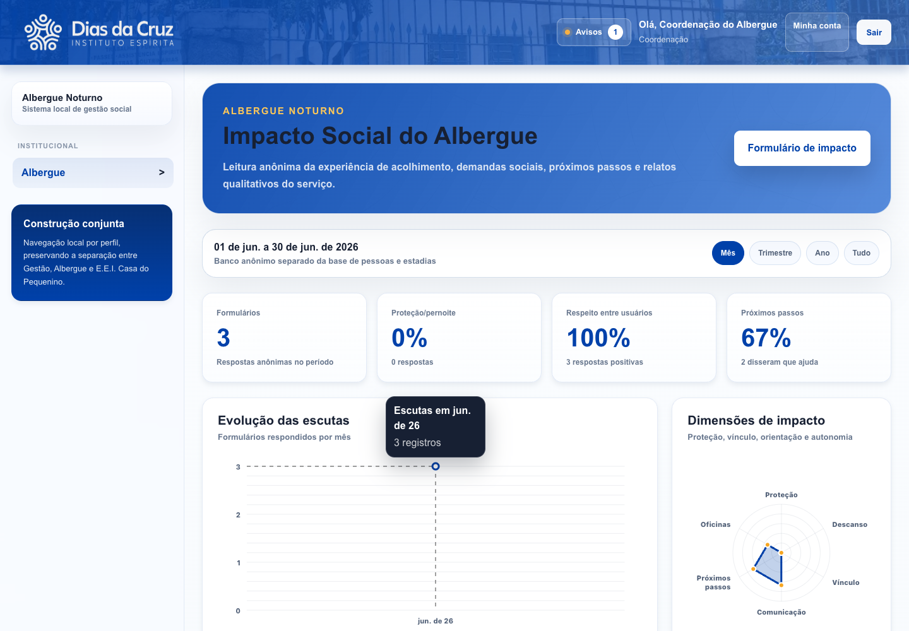
1 2 3Abre registro anônimo da experiência de acolhimento.
Mostra volume de respostas por período.
Resume proteção, comunicação, descanso, oficinas e próximos passos.
Serve para gestão do serviço, não para exposição individual.
 1
2
3
1
2
3
Situação territorial e tempo sem moradia estável.
Respeito, comunicação, proteção e orientação.
Demanda identificada e ação realizada.
O formulário deve permanecer anônimo.
Conferência de RMA transforma divergência em ação administrativa
A ferramenta compara a planilha Gesuas com o sistema e mostra diferenças antes do fechamento.
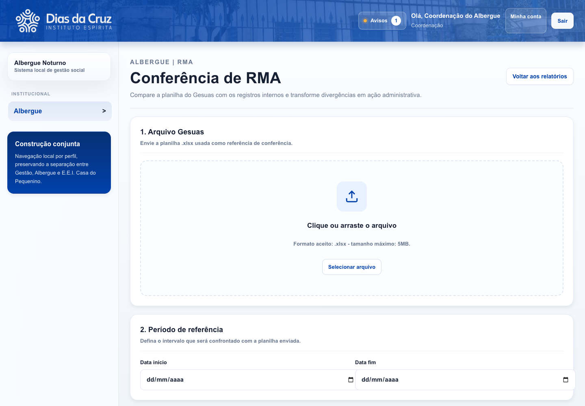
1 2 3Recebe planilha `.xlsx` usada como referência.
Define intervalo comparado com a base interna.
Retorna à leitura gerencial do Albergue.
Corrigir divergências antes de fechar o mês.
Quem registra, quem valida e quem decide
O sistema reduz retrabalho quando a responsabilidade de cada etapa é explícita.
| Atividade | Responsável | Aprovador | Uso do sistema |
|---|---|---|---|
| Entrada e checkout | Educador ou plantão | Coordenação | Busca, perfil, cama e estadia. |
| Prorrogação | Coordenação | Coordenação | Modal da casa ou perfil, com motivo. |
| Troca de cama | Educador/coordenação | Coordenação | Modal da casa, revisando origem e destino. |
| Presença e censo | Plantão | Coordenação | Tela de presença e encerramento da triagem. |
| Qualidade de dados | Coordenação | Coordenação | Correção de cadastros, presenças e estadias. |
| RMA | Coordenação | Gestão/equipe técnica | Upload Gesuas e análise de divergências. |
Checklist de plantão e fechamento
Use como roteiro de treinamento ou conferência rápida.